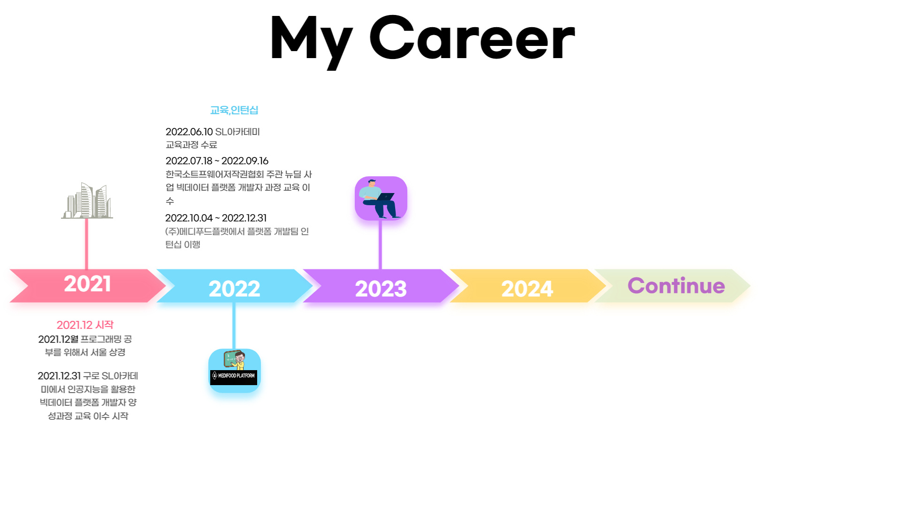

Nice to meet you
안녕하십니까?
성장하는 개발자 양정헌 입니다.

1. 요약
- 2021.12월 말일. 프로그래밍을 공부하기 위해서 지방에서 올라와 2022년 6월 10일까지 국비교육과정으로
" 인공지능을 활용한 빅데이터 플램폼 개발자 양성과정 "을 수료하면서 Python,MySQL,Network,
Django framework 등에 대한 기초를 수립 그리고 뉴딜 사업 교육을 참여하면서 javascript,node.js등을 학습했고, 스스로 공부하는 방법, 보다 논리적인 사고, 이슈에 대한 구글링을 체득하였습니다.
- 그리고 2022.10.04 ~ 2023.12.31까지 (주)메디푸드플랫폼에서 인턴십을 이행하면서 PHP,Laravel Framework로 만들어진 프로젝트 유지/보수를 하였습니다.
- 2023.01.01부터 (주)메디푸드플랫폼에서 메타 데이터 업무, 라라벨 프로젝트 유지/보수, 데이터 엔지니어링 등의 업무를 맡고 있습니다.
2. 특징
- 몰입을 할 수 있는 집중력이 있습니다.
- Blog에 공부한 내용을 정리하면서 스스로 학습할 수 있습니다.
- 문제에 대해서 다양한 관점으로 바라보려고 합니다.
- 맡은 일에 대해서 책임지고 완수하려고 합니다.
- 존중,배려의 자세를 가지고 있습니다.
- 확신에 있어서는 고집이 있습니다.
- 체력 관리를 위해 운동 하는 것을 좋아합니다.
3. 어떤 프로그래머가 되고 싶나요?
- 실력으로 후임,선임분께 인정받는 개발자
- 배움에 있어서는 늘 겸손한 개발자
- 초심을 잃지않고 계속 발전할 수 있는 개발자
- 개발과 엔지니어의 역량을 두루 갖추는 DevOps
